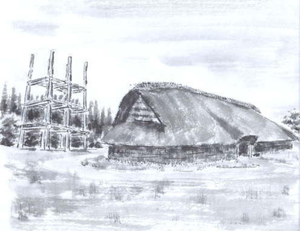
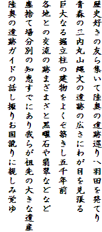
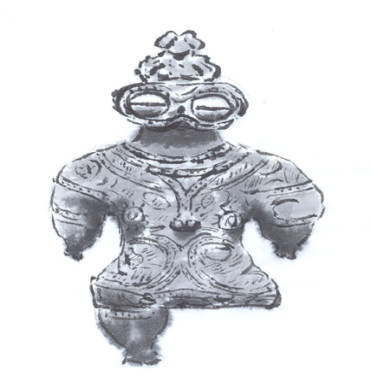
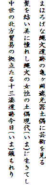
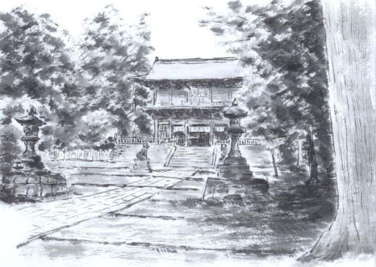
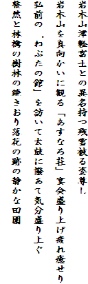
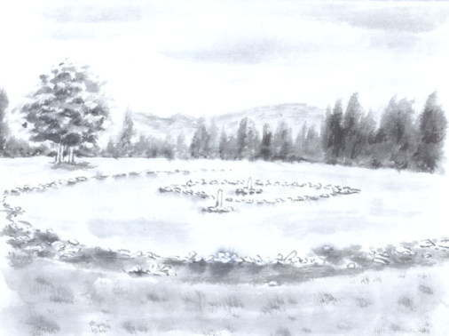
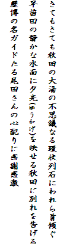

| 見たい項目をクリックして下さい | |||||||||
|
| 行 事 の記 録 （詳 細 - ２３） |
|
墨絵と短歌で綴る陸奥遺跡巡り
墨絵 小林 孝雄 短歌 野々山 茂 |
| 掲載日 ０４−７−２０ |
| 旅の日時・見学先・参加者等については、「行事記録（詳細-２２）」をご覧下さい。 |
|  |  |
| |
|  |  |
| |
|  |  |
|  |  |
| 以上、さいかちの会の会員による「墨絵と短歌で綴る陸奥遺跡巡り」でした。 合せて、横浜市遺跡公園ガイドボランティア１期の皆さんによる 「東北遺跡巡り」 をご覧下さい。 |
|